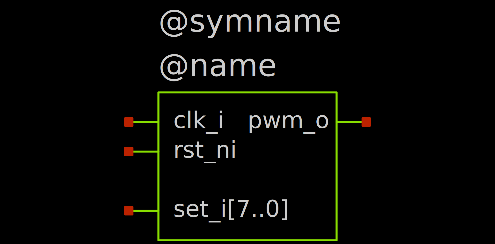
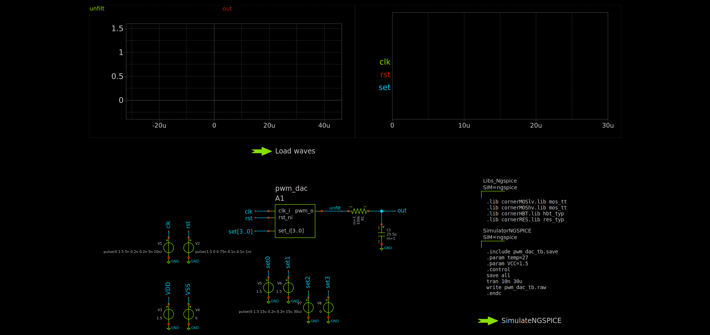

Creating a Mixed-Signal Simulation
To get a full mixed-signal simulation, we need: - Digital design, we write it in SystemVerilog - Analog design, we write it in SPICE - A symbol representing the digital design - Testbench, combining both Analog and Digital designs and defining their interaction
In our example, we create a simple PWM DAC, with digitally adjustable output voltage levels.
Digital Design¶
We create a simple SystemVerilog module with the following signals:
Inputs
clk_i: Clock signalrst_ni: Active-low reset signalset_i[7:0]: 8-bit control signal for the duty cycle
Outputs
pwm_o: PWM output signal
The module might look something like this:
`timescale 1ns/1ps
module pwm_dac (
input logic clk_i, // Clock signal
input logic rst_ni, // Active-low reset signal
input logic [3:0] set_i, // 4-bit control signal for the duty cycle
output logic pwm_o // PWM output signal
);
logic [3:0] counter_d, counter_q;
initial begin
$display("PWM DAC digital part started");
$dumpfile("pwm_dac.vcd");
$dumpvars(0, pwm_dac);
end
always_ff @(posedge clk_i or negedge rst_ni) begin
if (!rst_ni) begin
counter_q <= '0;
end else begin
counter_q <= counter_d;
end
end
always_comb begin
if (!rst_ni) begin
counter_d = '0;
end else begin
counter_d = counter_q + 1;
end
end
assign pwm_o = (counter_q < set_i) ? 1'b1 : 1'b0;
endmodule
`timescale directive is crucial for enabling cosimulation.
We save this code as pwm_dac.sv and compile it with Icarus Verilog. This is done with the following command:
-g2012 flag tells Icarus Verilog to use the SystemVerilog 2012 standard.
This gives us a compiled simulation model that we can use for testing. You can actually open the resulting pwm_dac file with your text editor and see that it's a script for the vvp tool.
Analog Design¶
We design a simple 1-stage RC lowpass filter. We assume the input frequency to be 1MHz. We take the corner frequency one decade lower, at 100kHz. With \(R = 100\ k\Omega\), we need \(C = \frac{1}{2\pi f_c R} = \frac{1}{2\pi \cdot 100\ k\Omega \cdot 100\ kHz} \approx 16\ pF\).
We implement the circuit in the testbench pwm_dac_tb.sch directly via
Symbol for the Digital Design¶
We need to create a symbol for the digital design that we can use in the testbench. This symbol should represent the inputs and outputs of the pwm_dac module. Create a new symbol with
File -> Save as symbol (or Ctrl + Alt + S). This ensures that the symbol properties are properly setup.
Now, we first configure these properties by double-clicking the emtpy canvas. This opens an empty text input where we enter:
type=primitive
format="@name [ @@clk_i @@rst_ni @@set_i[7..0] ] [ @@pwm_o ] @model"
template="name=A1 model=pwm_dac"
- The type of the symbol (
primitive, other options includesubcircuitfor actual circuits) - The format of the circuit. This has to be very specific:
@name: The name of the instance in the schematic (e.g.,A1)[ @@clk_i @@rst_ni @@set_i[3..0] ]: The input ports of the instance[ @@pwm_o ]: The output ports of the instance@model: The model name of the instance (e.g.,pwm_dac)
- The template for the instance. This defines how the instance will be instantiated in the schematic. Here, the instance gets the name
A1and the modelpwm_dac, which we have built above.
Now, we place the pins of the symbol in the schematic. Do this via Symbol -> Place symbol pin (Alt + P). Make sure to set the correct name and direction (in, out or inout) for each pin.
Your symbol might look something like this:

The @symname and @name texts are placeholders that will be replaced with the actual symbol and instance names when the schematic is instantiated. You can leave them out.
Testbench¶
Now, we go back to the testbench
And place our symbol into the schematic, hooking the output up to the lowpass filter. Also place voltage sources to input the clock and reset signals, as well as the control inputs. Single signals from a bus can be accessed via the set0 up to set3 labels if you have a set[3..0] label.
Add the device models and simulation commands/launcher. For the simulation commands, we use the following:
.include pwm_dac_tb.save
.param temp=27
.param VCC=1.5
.control
save all
tran 10n 10u
write pwm_dac_tb.raw
VCC. This defines the logic levels for the digital->analog and analog->digital transitions. These transitions can be set up more sophisticated, but for now we just set VCC to our vdd, 1.5V. Also, we set the simulation time to 10 microseconds with a timestep of 10 nanoseconds and to save all data to pwm_dac_tb.raw.
Also add a waveform loader and two graphs.
The testbench might look like this: 
Simulation¶
Currently, for the simulation to run successfully, some tweaks need to be made when you are using the IIC-OSIC-TOOLS container:
sudo mkdir -p /usr/local/lib/ngspice
sudo cp /foss/tools/ngspice/lib/ngspice/ivlng.vpi /usr/local/lib/ngspice
sudo cp /foss/tools/iverilog/lib/libvvp.so /foss/tools/ngspice/lib/ngspice
We can then run the simulation with the simulation launcher. You should see such an output:
******
** ngspice-44.2 : Circuit level simulation program
** Compiled with KLU Direct Linear Solver
** The U. C. Berkeley CAD Group
** Copyright 1985-1994, Regents of the University of California.
** Copyright 2001-2024, The ngspice team.
** Please get your ngspice manual from https://ngspice.sourceforge.io/docs.html
** Please file your bug-reports at http://ngspice.sourceforge.net/bugrep.html
** Creation Date: Tue Jul 29 08:21:22 UTC 2025
******
Note: No compatibility mode selected!
Circuit: ** sch_path: /workspaces/oscic-playground/cosim/pwm_dac_tb.sch
Note: No compatibility mode selected!
Reducing trtol to 1 for xspice 'A' devices
Doing analysis at TEMP = 27.000000 and TNOM = 27.000000
Using SPARSE 1.3 as Direct Linear Solver
Initial Transient Solution
--------------------------
Node Voltage
---- -------
out 0
unfilt 0
clk 0
rst 1.5
vdd 1.5
vss 0
set0 1.5
set1 1.5
set2 1.5
set3 0
v#branch 0
v7#branch 0
v6#branch 0
v5#branch 0
v4#branch 0
v3#branch 0
v2#branch 0
v1#branch 0
auto_dac#branch_1_0 0
PWM DAC digital part started
VCD info: dumpfile pwm_dac.vcd opened for output.
Reference value 9_95157e-06
No. of Data Rows : 205255
binary raw file "pwm_dac_tb.raw"
ngspice 1 ->
PWM DAC digital part started and VCD info: dumpfile pwm_dac.vcd opened for output. which indicate that the digital part of the simulation is running properly!
Visualization¶
XSCHEM's built in graphs already include a handy way to display digital and analog signals concurrently. We use one of our graphs for the digital signals and one for the analog signals.
In the graph for the analog signals, add the unfilt and out signals. The settings can remain the default.
In the graph for the digital signals, add the clk, rst signals as well as set;set3,set2,set1,set0, which allows us to look at the set signals as a bus. You plots might look like this:

We can see that our simple PWM DAC example works as expected.
Now, you can also open the .vcd file in a waveform viewer to inspect the digital part more closely.